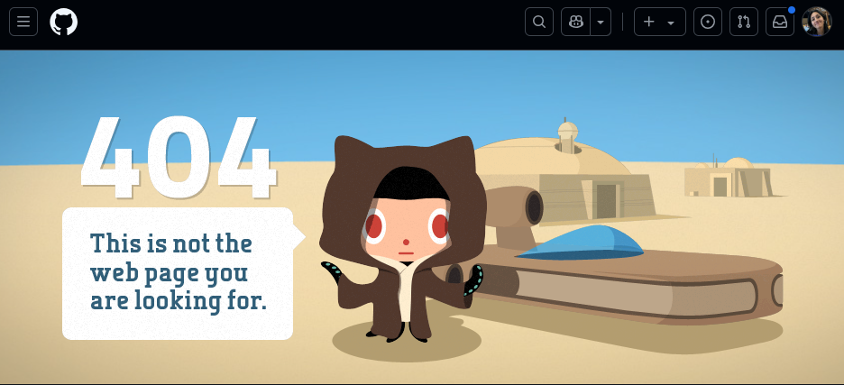
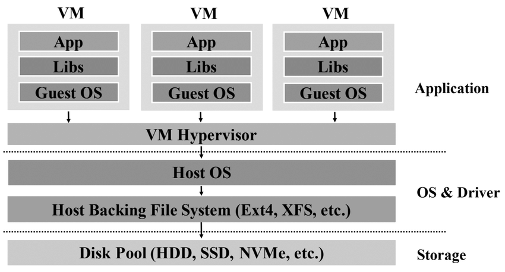
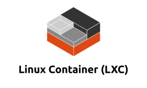
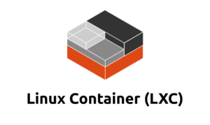

Reproducible Experiments
in Computer Science Research
Martina Baiardi and Raphael Schwinger
What is reproducibility?
Reproducibility of experiments is the key to validating scientific claims.
- Validation of Results that were claimed in the scientific publication
- Advancing Knowledge without re-building everything from scratch

How does this affect us as computer scientist?
Let’s make an example
-
I find an interesting paper that fits my research needs.
-
The authors’ methods seem perfect for my work, so I want to dive deeper into their experiment.
-
I look for the companion artifact… What can go wrong?
1) Artifacts not available
The link to the research artifacts (code, data, etc.) is broken.
2) Missing an explanation on how to execute it
- The artifacts are available but in non-standard formats that researchers can be unfamiliar with.
- The file sizes are unexpectedly large.
- No clear instructions on how to use them.
Example: How would you open and execute a
duffy-duck.qcow2file that weights 20GB? Yes, it can be a valid artifact.
3) The artifact is not running
- Strange errors prevent the artifact to execute on my pc
- Runtime dependencies may be missing, but
whichones?
Finally, let’s don’t forget about
the elephant in the room

As computer scientists we can do better
We can demonstrate that our paper claims work, by providing a reproducible companion artifact.
However, reproducibility is a process that starts from software development:
- Reproducible builds: Adoption of build automation tools to manage experiment dependencies.
- Isolation: Prepare a lightweight containerized environment for the distribution of the experiment.
- Automation: Create an automatic pipeline that tests the source-code and generates the artifacts, so you don’t have to do it by hand.
- Open-Source Research: protect your ownership by picking correct license.
Build automation tools
- Dependency management
- Build automation
- Consistency Across Environments
- Incremental Builds
Popular examples
Python: pip just does not cut it
pip install- installs packages globally, which can lead to conflicts
- does not save the exact versions of the dependencies -> inconsistent environments
- What we need:
- Dependency management: when one developer installs a package, all other developers can easily install the same package with the same version
- (Virtual Environments: to isolate the dependencies of different projects)
- Build automation: to manage the build process and run tests
Poetry
- Dependency management
poetry installto install dependencies defined inpyproject.tomlpoetry add <package>to add a new dependency- Will automatically update
pyproject.tomlandpoetry.lock poetry updateto update dependencies
- Environment management
eval $(poetry env activate)to activate the virtual environment
Configuration Frameworks
Hydra
- Configuration files: YAML files that define the configuration of the experiment
- Hierarchical Configuration Composition: Allows to define a base configuration and override it with specific configurations
- Command-Line Overrides: Allows to override configuration values from the command line
- Multi-Run: Allows to run the same experiment with different configurations
Logging
- Track the experiment’s progress and used configurations
- Wandb: A platform for tracking machine learning experiments
- TensorBoard: A visualization toolkit for machine learning experiments
- MLflow: An open-source platform for managing the end-to-end machine learning lifecycle
Containerization
Long story short
 Image source
Image source
Actually, the story is longer
- Technically, a machine can be “shipped” using virtualization
- Virtual Machines encapsulates the whole Operating System. The result is:
- a heavy-weight disk file (order of
GBs) - a slower startup, and consequently running
- a heavy-weight disk file (order of
- They rely on hypervisors, software that make hardware resources available to the virtualized host operating system.

Source: Research Gate. Available here.
Do we really need the whole Operating System?
In most cases the answer is no
 Image source
Image source
What is containerization?
- Containerization is a lightweight form of virtualization
- It allows you to package and run applications and their dependencies in isolated environments, called containers.
- Ensures consistent environments for development, testing, and production.
How Containers Work
-
Containers share the host system’s kernel but are isolated in their own user space.
-
Container Image: A lightweight, standalone, executable package that includes everything needed to run the software.
-
Container: A running instance of an image.
Container != Docker
Docker is an open-source platform for distributing and executing containers.
It’s not the only solution, but we use it as a reference since it’s the most used.

 


Docker Key-Concepts
Docker Image: Template for creating containers, built from a Dockerfile.
Docker Hub: A cloud-based registry for storing and sharing Docker images.
Dockerfile: A text file containing a set of instructions to build a Docker image.
Basic Docker Commands
docker build: Build an image from a Dockerfile.
docker run: Run a container from an image.
docker ps: List running containers on the machine.
docker images: List all locally available Docker images.
docker stop: Stop a running container.
Creating a Dockerfile
A Dockerfile is a script with instructions on how Docker Image is built.
FROM python:3.9
WORKDIR /app
COPY . .
RUN pip install -r requirements.txt
CMD ["python", "experiment.py"]
Explanation:
FROM: Specifies the base image (here, Python 3.9).WORKDIR: Sets the working directory inside the container.COPY: Copies files from the host to the container.RUN: Executesshellcommands inside the container.CMD: Defines the command to run when the container eventually starts.
Complete list of Dockerfile instructions here.
Building a Docker Image
To build the Docker image from the Dockerfile:
docker build -t myapp:latest .
Running a Docker Container
docker run -d -p 5000:5000 myapp:latest
Multi-Container Applications
How many containers do you need for a web server?
At least two: One for the front-end and another for the backend. Plus another one if there’s also a database.
Do I need to configure and run each one independently?
Obviously no.
Docker compose is a tool for defining and running multi-container Docker applications using YAML syntax.
version: '3'
services:
web:
image: myapp
ports:
- "5000:5000"
db:
image: postgres
environment:
POSTGRES_PASSWORD: example
Is simply run with:
docker-compose up
Is this complexity worth it?
Portability: Docker containers can run on any machine.
Isolation: Each container is isolated, which means applications and dependencies do not conflict.
Efficiency: Containers are lightweight and start quickly, allowing faster deployment cycles.
Hands on a real example!
A highly opinioated example: https://github.com/raphaelschwinger/lightning-hydra-template
Forked from: https://github.com/ashleve/lightning-hydra-template
Automation
Recipe for automation
Automation:
- Put your experiment in a Repository
- Choose a standard license
- Configure CI/CD
Code repositories
- Foster Collaboration
- Share changes on the codebase
- Provide auxiliary services
- Issue tracking
- CI/CD
- Documentation hosting
- Most popular:
GitHubandGitLab - Prefer cloud-based solutions instead of on-premise ones
- Prepare a good
README.mdthat describes how to execute the experiment - Just share the source files, do not share the builds! Prepare a correct
.gitignore
Public or private repository?
Open-sourcing allows the community to work on your problem, build on it and improve it!
Are you afraid that someone can “steal” your work?
If you don’t pick a license, your repository is considered proprietary even if it is public.
If you want to allow contributions, just pick the correct licensing: http://choosealicense.com/licenses/
CI/CD: Continuous Integration & Continuous Deployment
For each change on the source code:
- automatically run a verification process
- if tests succeed, then prepare the artifact
- if the artifact is generated correctly, then publish it
Most code hosting platforms provide free limited plans for setting up CI/CD.
Usually, free plans are offered only for public repositories
GitHub GitHub Actions
GitHub Action Key concepts
- Workflow: automation process triggered by events (e.g., push, pull request, issue creation).
- Pipeline: structured sequence of
jobs(like build, test, deploy) executed as part of a workflow.
Each job runs in its own virtual machine or container.
Each job consists of multiple steps, which can include running shell commands or using prebuilt actions.
- Actions: reusable jobs that can be re-used
- Runners: machines that execute workflows.
GitHub provides hosted runners (Linux, macOS, Windows), or you can use self-hosted runners.
Quickstart
Workflows are defined as YAML files inside .github/workflows/ folder of the project.
If the folder exists, then GitHub tries to execute the workflows inside of that.
Some examples
Trivial example: this repository
Better example: submitted experiment